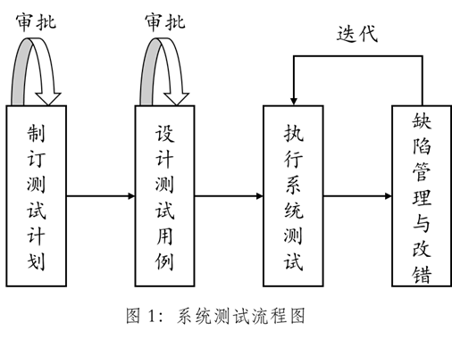

系统测试
[TOC]
概念
系统测试是对已经集成好的软件进行彻底的测试，此外还需要检测它与系统中的其他部分能否协调工作，以验证软件系统的正确性和性能等是否满足需求规格说明所指定的要求。
系统测试通常是消耗测试资源最多的地方。
流程

主要方法
系统测试很困难，并且没有一套通用的方法，因此系统测试需要创造性。
下面是几类常用的系统测试。
性能测试
性能测试就是对软件的运行性能指标进行测试，判断系统集成之后在实际的使用环境下能否稳定、可靠地运行。为记录软件的运行性能，经常需要在系统中安装必须的测量仪表或者软件。
在性能测试中，主要考虑以下两个方面：
时间性能
时间主要指软件的一个具体事务的响应时间。响应时间的长短并无一个绝对统一的标准。
空间性能
指软件运行时消耗的系统资源，它直接决定了系统的最低配置、推荐配置。
性能测试最终要达到的目标：
（1）判断被测系统是否满足预期的性能需求；
（2）判断系统的性能表现。
强度测试
也称压力测试、负载测试。强度测试模拟实际情况下软/硬件环境和用户使用过程的系统负荷，长时间或超负荷地运行测试软件来测试系统，以检验系统能力的最高限度，从而了解系统的可靠性、稳定性等。
例如，将输入的数据值提高一个或几个数量级来测试输入功能的响应等。
安全性测试
目的在于检查系统对非法侵入的防范能力，验证安装在系统内的保护机构是否确实能够对系统进行保护。安全性测试设法设计出一些测试用例试图突破系统的安全保密措施。
理论上只要有足够的时间和资源，没有不可进入的系统，因此系统安全的设计准则是使非法侵入的代价超过被保护信息的价值。
典型的安全性测试考虑的问题如下：
（1）系统能否检测到无效参数，并予以合适的处理；
（2）系统能否检测到无效指令，并进行适当的处理；
（3）系统能否正确保存系统配置数据，系统发生故障时能否恢复；
（4）系统能否将配置数据导出，并在其他计算机上进行备份；
（5）系统能否导入配置数据，并正常使用导入的数据；
（6）能否不输入密码就登录系统；
（7）系统对多次无效密码的输入能否进行适当的处理；
（8）执行严格的安全性功能能否比系统的其他部分具有更高的有效性；
（9）是否具备防止主要错误或自然意外方面的能力；
（10）是否具有较高的安全性控制精度，包括错误的数量、频率和严重性。
（11）系统对各种指令或操作的反应时间如何；
（12）是否具有较高的吞吐量，吞吐量包括用户和服务请求的峰值与均值。
兼容性测试
要对新软件进行兼容性测试，需要知道以下信息：
- 软件要求与哪种操作系统、Web 浏览器、应用软件保持兼容，如果要测试的软件是一个平台，那么设计要求哪些应用软件能在它上面运行；
- 软件使用哪种数据与其他平台和软件进行交互和共享信息。
向前兼容和向后兼容
向前兼容指可以使用软件的未来版本；
向后兼容指可以使用软件的以前版本。
不同版本之间的兼容性
不可能在一个操作系统上测试所有的软件程序，因此决定哪些是必须测试的，决定的原则如下：
（1）流行程度
（2）年头：应该选择 3 年以内的程序和版本。
（3）类型：把软件分为画图、字处理、数据库、通信等类型，每一种类型选择一个软件进行测试。
（4）生产厂商：根据开发软件的公司来选择软件。
标准和规范
适用于软件平台的表追和规范分为高级标准和低级标准。
高级标准是产品普遍应遵守的，例如 Microsoft Windows 认证徽标。
低级标准是对产品开发细节的描述。
数据共享兼容性
针对数据共享进行测试需要考虑以下几个方面：
（1）文件能够正常地在各种介质中进行保存和读取；
（2）文件能够正确导入和导出；
（3）能够支持剪切、复制及粘贴等基本操作；
（4）支持软件在不同版本间的数据转换。
恢复测试
目的是检查系统的容错能力，在恢复性测试过程中采用多种人工干预的方式使系统失效，从而检验系统的恢复能力。若系统能够自动从失效中恢复，测试的重点在于对重新初始化、数据恢复、重启等功能的正确性验证；若系统必须经人工干预后才能从失效中恢复，测试重点还包括评估平均恢复时间（Mean Time Between Failures，MTTR）是否在规定的范围内。
在恢复性测试中主要考虑以下问题：
（1）是否存在潜在的灾难和已确认的系统失效导致的结果会怎样；
（2）系统保护和恢复过程是否为错误提供了足够的反应；
（3）恢复过程是否能够正确工作。
用户图形界面测试
优秀用户界面的基本构成标准：
（1）规范化：典型规范化要求包含第一次打开应用程序时应显示有关系统基本信息的屏幕，各种窗口应该有最小化、恢复和关闭按钮，有约定成俗的正确图标，有正确标题，数据的规范显示等。
（2）灵活性：主要针对熟练的用户而言，多样化的选择，例如界面皮肤、更换字体等。
（3）正确性：根据产品说明书对照即可发现问题。
（4）直观性
（5）舒适性
（6）实用性
（7）一致性：遵循公开的标准和规范。
（8）帮助：系统应提供详尽、可靠的帮助文档。
（9）独特性
（10）多窗口应用与系统资源：尽可能占用最低限度的资源，多窗口要保证用户操作方便。
安装测试
目标如下：
（1）安装程序能够正确运行；
（2）程序安装正确；
（3）程序安装后能够正确运行；
（4）完善性安装后程序仍能正确运行。
安装前测试重点：
（1）是否需要专业人员安装；
（2）确认打包程序的特性。
安装过程中的测试重点：
（1）安装过程应与安装手册中描述的步骤完全一致；
（2）安装过程应符合一般的安装流程；
（3）检验安装过程中的所有默认选项；
（4）检验安装过程中的所有典型选项；
（5）应对安装环境进行限制；
（6）应测试不同的安装组合（包括参数组合、控件执行顺序的组合、产品组件安装顺序的组合等）；
（7）在安装过程中应有明显、合理的操作提示；
（8）应验证软件使用许可证号或注册码；
（9）应能识别大部分硬件。
对于安装过程中的异常情况，应考虑以下方面：
（1）应测试安装空间不足的情况；
（2）测试异常配置或状态（如断电、断网、数据库终止等）；
（3）安装过程中应允许终止，终止安装后能确保系统恢复原状。
安装之后的测试重点：
（1）能否产生正确的目录结构和文件；
（2）动态库是否正确；
（3）软件能否正确运行；
（4）在所有运行环境上验证安装过程；
（5）安装后系统是否对其他应用程序造成不正常影响；
（6）Web 服务是否有冲突；
（7）系统升级后原有应用程序能否正常运行。
此外还有软件卸载的测试。
可靠性测试
如果系统需求规格说明书中有可靠性要求，就需要进行可靠性测试。
通常使用以下指标来度量系统的可靠性：平均无故障时间是否超过规定的时限、因故障停机的时间一年内不应超过多少时间等。
配置测试
配置测试是用各种硬件和软件平台以及不同设置检查软件操作的过程，以保证测试的软件可以使用尽可能多的硬件组合。
如果没有时间和计划测试所有的配置，就需要把成千上万种可能的配置缩减到可以接受的范围，即测试的目标。在计划配置测试时一般采用的过程如下：
（1）确定所需的硬件类型；
（2）确定哪些硬件型号和驱动程序可以使用；
（3）确定可能的硬件特性、模式和选项；
（4）将硬件配置缩减到可以控制的范围内；
（5）明确使用硬件配置的软件特性；
（6）设计在每种配置中要执行的测试用例；
（7）反复测试直到满意为止。
可用性测试
- 符合标准和规范
- 直观性
- 一致性
- 灵活性
- 舒适性
- 正确性
- 实用性
文档资料测试
网站测试
一般网络测试包括以下内容：
文字测试
可以用测试文档的方法进行测试，检查用户等级、术语、内容、准确度，特别是可能过期的内容。
链接测试
（1）测试所有链接是否按指示的那样链接到了正确的页面；
（2）测试所链接的页面是否存在；
（3）保证网站上没有孤立的页面，即没有链接指向的页面；
（4）链接测试必须在集成测试阶段完成。
图形测试
一个 Web 页的图形可以包括图片、动画、边框、颜色、字体、背景、按钮等，内容如下：
（1）确保图形有明确用途，避免浪费带宽；
（2）图片的大小和质量很重要；
（3）检测是否所有图形都正确载入和显示了；
（4）验证所有页面字体的风格是否一致；
（5）背景颜色是否与字体颜色和前景颜色搭配；
（6）验证文字回绕是否正确。
表单测试
表单是指网页上用于输入和选择信息的文本框、列表框、其他域。
检测域的大小是否正确，数据接收是否正确，可选域是否真正可选等内容。
动态内容测试
动态内容指根据当前条件发生变化的文字和图形，例如日期、时间、用户喜好或者具体的用户操作等。
数据库测试
在使用了数据库的 Web 应用系统中一般可能出现两种故障：一是数据一致性故障，二是输出故障。前者主要是用户提交的表单信息不正确引起，后者主要是网络速度或程序设计问题引起的。
服务器性能和加载测试
模拟数百万个链接和下载。
安全性测试
（1）测试有效的和无效的用户名和密码，是否可以不登录而直接浏览某个页面；
（2）检测网页是否有超时的限制，即用户登录后在一定时间内没有操作是否需要重新登录；
（3）当使用安全套接字时检测加密是否正确、信息是否完整；
（4）服务器端的脚本是否构成安全漏洞。
常见的测试工具
负载压力测试
LoadRunner(商用)、JMeter(开源)
功能测试
WinRunner
白盒测试
JUnit5
测试管理
TestDirector、TestManager
参考资料：
[1] 秦航，杨强 . 软件质量保证与测试(第 2 版)[M] . 北京：清华大学出版社，2017